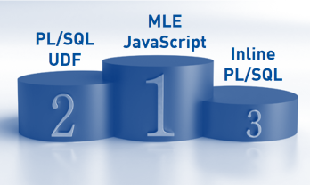
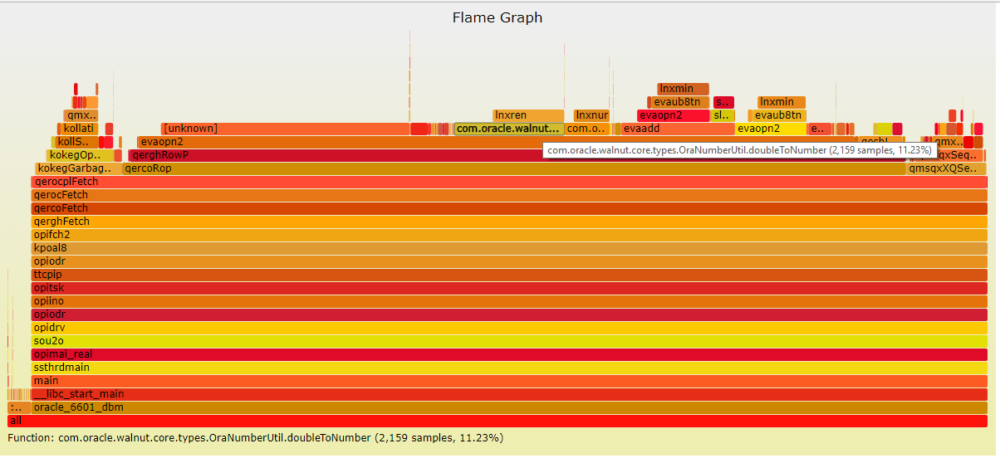

|
|
This was first published on https://blog.dbi-services.com/oracle-database-multilingual-engine-mle (2017-10-11)
Republishing here for new followers. The content is related to the the versions available at the publication date
My ODC appreciation blog post was about Javascript in the database running in the beta of the Oracle Database Multilingual Engine (MLE). Here I’ll detail my first test which is a comparison, in performance, between a package written in Javascript, running in the MLE, and one written and running in PL/SQL. I’ve downloaded the 12GB .ova from OTN, installed the latest SQLcl, and I’m ready to load my first Javascript procedure. I want something simple that I can run a lot of times because I want to test my main concern when running code in a different engine: the context switch between the SQL engine and the procedural one.
My kid’s maths exercises were about GCD (greatest common divisor) this week-end so I grabbed the Euclid’s algorithm in Javascript. This algorithm was the first program I ever wrote long time ago, on ZX-81, in BASIC. Now in Javascript it can use recursion. So here is my gcd.js file:
module.exports.gcd = function (a, b) {
function gcd(a, b) {
if (b == 0)
{return a}
else
{return gcd(b, a % b)}
}
return gcd(a,b)
}
We need strong typing to be able to load it as a stored procedure, so here is the TypeScript definition in gcd.d.ts
export function gcd(a:number, b:number ) : number;
I load it with the dbjs utility, which I run in verbose mode:
[oracle@dbml MLE]$ dbjs deploy -vv gcd.js -u demo -p demo -c //localhost:1521/DBML
deploy: command called /media/sf_share/MLE/gcd.js oracle
Oracle backend: starting transpiler
gcd: processed function
Oracle backend: opening connection to database
gcd.js: retrieving functions
dropModule: called with gcd.js
loadModule: called with gcd.js
BEGIN
EXECUTE IMMEDIATE 'CREATE PACKAGE GCD AS
FUNCTION GCD("p0" IN NUMBER, "p1" IN NUMBER) RETURN NUMBER AS LANGUAGE JS LIBRARY "gcd.js" NAME "gcd" PARAMETERS("p0" DOUBLE, "p1" DOUBLE);
END GCD;';
END;
: generated PLSQL
+ gcd.js
└─┬ gcd
└── SCALAR FUNCTION GCD.GCD("p0" IN NUMBER, "p1" IN NUMBER) RETURN NUMBER
As it is mentioned in the verbose log, the Javascript code is transpiled. My guess is that the Javascript is parsed by the Oracle Truffle framework and compiled by Oracle GaalVM. More info in the One VM to Rule Them All paper.
This has loaded the package, the library and an ‘undefined’ object of type 144 (this MLE is in beta so not all dictionary views have been updated):
SQL> select * from dba_objects where owner='DEMO'; OWNER OBJECT_NAME SUBOBJECT_NAME OBJECT_ID DATA_OBJECT_ID OBJECT_TYPE CREATED LAST_DDL_TIME TIMESTAMP STATUS TEMPORARY GENERATED SECONDARY NAMESPACE EDITION_NAME SHARING EDITIONABLE ORACLE_MAINTAINED ----- ----------- -------------- --------- -------------- ----------- ------- ------------- --------- ------ --------- --------- --------- --------- ------------ ------- ----------- ----------------- DEMO GCD 93427 PACKAGE 09-OCT-2017 15:29:33 09-OCT-2017 15:29:33 2017-10-09:15:29:33 VALID N N N 1 NONE Y N DEMO gcd.js 93426 LIBRARY 09-OCT-2017 15:29:33 09-OCT-2017 15:29:33 2017-10-09:15:29:33 VALID N N N 1 NONE Y N DEMO gcd.js 93425 UNDEFINED 09-OCT-2017 15:29:33 09-OCT-2017 15:29:33 2017-10-09:15:29:33 VALID N N N 129 NONE N SQL> select * from sys.obj$ where obj# in (select object_id from dba_objects where owner='DEMO'); OBJ# DATAOBJ# OWNER# NAME NAMESPACE SUBNAME TYPE# CTIME MTIME STIME STATUS REMOTEOWNER LINKNAME FLAGS OID$ SPARE1 SPARE2 SPARE3 SPARE4 SPARE5 SPARE6 SIGNATURE SPARE7 SPARE8 SPARE9 ---- -------- ------ ---- --------- ------- ----- ----- ----- ----- ------ ----------- -------- ----- ---- ------ ------ ------ ------ ------ ------ --------- ------ ------ ------ 93427 284 GCD 1 9 09-OCT-2017 15:29:33 09-OCT-2017 15:29:33 09-OCT-2017 15:29:33 1 0 6 65535 284 51713CBD7509C7BDA23B4805C3E662DF 0 0 0 93426 284 gcd.js 1 22 09-OCT-2017 15:29:33 09-OCT-2017 15:29:33 09-OCT-2017 15:29:33 1 0 6 65535 284 8ABC0DDB16E96DC9586A7738071548F0 0 0 0 93425 284 gcd.js 129 144 09-OCT-2017 15:29:33 09-OCT-2017 15:29:33 09-OCT-2017 15:29:33 1 0 6 65535 284 0 0 0
So, I’ve executed the function multiple times for each one of 10 millions rows:
SQL> select distinct gcd(rownum,rownum+1),gcd(rownum,rownum+2),gcd(rownum,rownum+3) from xmltable('1 to 10000000');
Elapsed: 00:00:17.64
The execution on 30 million took 17 seconds
In order to compare, I’ve created the same in PL/SQL:
SQL> create or replace function gcd_pl(a number, b number) return number as 2 function gcd(a number, b number) return number is 3 begin 4 if b = 0 then 5 return a; 6 else 7 return gcd_pl.gcd(b,mod(a,b)); 8 end if; 9 end; 10 begin 11 return gcd_pl.gcd(a,b); 12 end; 13 /
Here is the execution:
SQL> select distinct gcd_pl(rownum,rownum+1),gcd_pl(rownum,rownum+2),gcd_pl(rownum,rownum+3) from xmltable('1 to 10000000');
Elapsed: 00:01:21.05
In 12c we can declare a function with the pragma UDF so that it is optimized for calling from SQL
SQL> create or replace function gcd_pl_udf(a number, b number) return number as 2 pragma UDF; 3 function gcd(a number, b number) return number is 4 begin 5 if b = 0 then 6 return a; 7 else 8 return gcd_pl_udf.gcd(b,mod(a,b)); 9 end if; 10 end; 11 begin 12 return gcd_pl_udf.gcd(a,b); 13 end; 14 /
Here is the execution:
SQL> select distinct gcd_pl_udf(rownum,rownum+1),gcd_pl_udf(rownum,rownum+2),gcd_pl_udf(rownum,rownum+3) from xmltable('1 to 10000000');
Elapsed: 00:00:51.85
We can also improve PL/SQL runtime by compiling it in native, rather than being interpreted on p-code
SQL> alter session set plsql_code_type=native; Session altered. SQL> alter function gcd_pl_udf compile; Function altered. SQL> alter function gcd_pl compile; Function altered.
and here is the result:
SQL> select distinct gcd_pl_udf(rownum,rownum+1),gcd_pl_udf(rownum,rownum+2),gcd_pl_udf(rownum,rownum+3) from xmltable('1 to 10000000');
Elapsed: 00:01:10.31
SQL> select distinct gcd_pl_udf(rownum,rownum+1),gcd_pl_udf(rownum,rownum+2),gcd_pl_udf(rownum,rownum+3) from xmltable('1 to 10000000');
Elapsed: 00:00:45.54
Finally, similar to an UDF function, we can declare the function in the query, inlined in a WITH clause:
SQL> with function gcd_pl_in(a number, b number) return number as
2 function gcd(a number, b number) return number is
3 begin
4 if b = 0 then
5 return a;
6 else
7 return gcd(b,mod(a,b));
8 end if;
9 end;
10 begin
11 return gcd(a,b);
12 end;
13 select distinct gcd_pl_in(rownum,rownum+1),gcd_pl_in(rownum,rownum+2),gcd_pl_in(rownum,rownum+3) from xmltable('1 to 10000000')
14 /
And here is the result:
Elapsed: 00:00:48.92
Here is a recap of the elapsed time: 
Elapsed: 00:00:17.64 for MLE Javascript Elapsed: 00:00:45.54 for PL/SQL UDF function (native) Elapsed: 00:00:48.92 for Inline PL/SQL Elapsed: 00:00:51.85 for PL/SQL UDF function (interpreted) Elapsed: 00:01:10.31 for PL/SQL function (native) Elapsed: 00:01:21.05 for PL/SQL function (interpreted)
The top winner is Javascript!
My tests were deliberately doing something we should avoid for performance and scalability: call a function for each row, because this involves a lot of time spent in switching the context between the SQL and the procedural engine. But this is however good for code maintainability. This overhead is not easy to measure from the database. We can look at the call stack to see what happens when the process is evaluating the operand (evaopn2) and switches to PL/SQL (evapls), and what happens besides running the PL/SQL itself (pfrrun). I have recorded perf-stat for the cases above to display the Flame Graph on the call stack. When looking for more information I remembered that Frits Hoogland already did that so I let you read Frits part1 and part2
You can download my Flame Graphs and here is a summary of .svg name and call stack from operand evaluation to PL/SQL run:
PL/SQL UDF function (native) perf-gcd_pl_UDF_native.svg evaopn2>evapls>peidxrex>penrun Inline PL/SQL perf-gcd_pl_inline.svg evaopn2>evapls>kkxmss_speedy_stub>peidxrex>pfrrun>pfrrun_no_tool PL/SQL UDF function (interpreted) perf-gcd_pl_UDF_interpreted.svg evaopn2>evapls>peidxexe>pfrrun>pfrrun_no_tool PL/SQL function (native) perf-gcd_pl_native.svg evaopn2>evapls>kgmexec>kkxmpexe>kkxdexe>peidxexe>peidxr_run>plsql_run>penrun PL/SQL function (interpreted) perf-gcd_pl_interpreted.svg evaopn2>evapls>kgmexec>kkxmpexe>kkxdexe>peidxexe>peidxr_run>plsql_run>pfrrun>pfrrun_no_tool
But more interesting is the Flame Graph for the JavaScript execution: 
My interpretation on this is limited but I don’t see a stack of context switching function before calling the MLE engine, which is probably the reason why it is fast. Besides the ‘unknown’ which is probably the run of the JavaScript itself (the libwalnut.so library has no symbols) we can see that most of the time is in converting SQL data types into JavaScript types at call, and the opposite on return:
This is the price to pay when running a different language, with different data types.
This MultiLingual Engine looks promising, both for functionalities (choose the language to run in the database) and performance (same address space than the SQL, and context switching is minimal). Of course, this is only in beta. There may be more things to implement, with more overhead. For example, we can imagine that if it goes to production there will be some instrumentation to measure time and record it in the Time Model. It may also be optimized further. You can test it (download from the MLE home and give feedback about it (on the MLE forum).
This post was about to measuring performance when switching from SQL to PL/SQL. In next post, I’ll look at callbacks when running SQL from MLE.
{kind=link}
{kind=link}